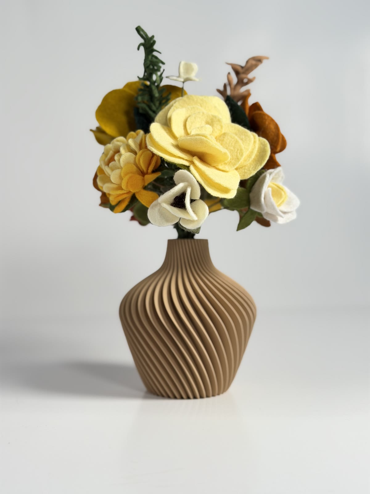

Felt flowers for the home
Flowers with
a softer touch.
Bring a little color to a shelf, dress up the table for spring, or make a favorite corner feel more like home.
Explore the flowers
Ways to bring flowers home
From a bouquet on the mantel to a wreath on the door, find a place for felt flowers in every season.

Vase arrangements
Felt bouquets for a mantel, entry table, or favorite shelf.


Floral wreaths
A sweep of felt flowers along a gold hoop adds color to a wall or door.

Decorative signs
Small clusters of blooms dress up wooden lettering and seasonal signs.


Holiday arrangements
Red roses and cream blooms fill a plaid Christmas pail.


Hanging accents
Felt mistletoe with soft white berries and a ribbon for hanging.


Individual blooms
A single felt begonia adds a small touch of color to a display.